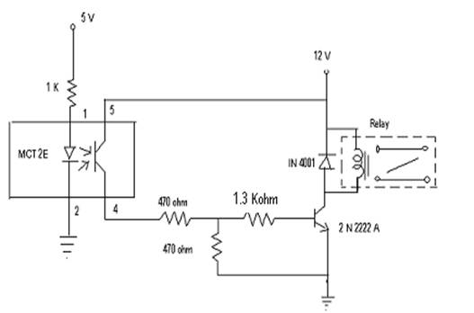
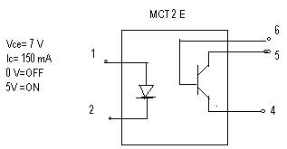
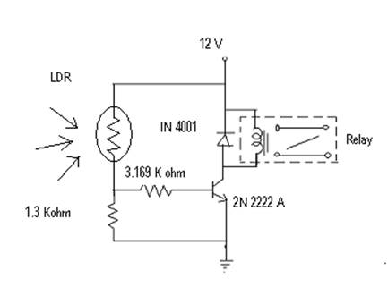

7.5.1: Title of the experiment: Design of relay driving circuits using LDR and Optocouplers.
7.5.2: Aim of the experiment: To design relay driving circuits using photo
devices like optocoupler and LDR.
7.5.3: List of equipments:
Sl No. Item Specification Quantity
1) Diode IN 4001 01
2) Transistor 2N2222 A 01
3) Resistors 10k ohm 01
5 K ohm 01
1 K ohm 03
4) Relay 12 V, 200 ohm
5) Fixed power supply +/-12V, 5V/2A 01
6) Variable power supply 0-30V/2A
7) LDR 10 MΩ 01
8) Optocoupler MCT2E 01
7.5.4: Experimental Setup:


b) For LDR:

7.5.5: Theory:
The relays are not recommended for low level switching operations, where load is in the range of micro amperes or a few mill amperes with open circuit voltage less than 10 mill volts. Special relays for such low switching applications can be available on special demand.
MCT 2E is an IC whose internal configuration is as shown in the figure. It consists of an LDR and a photo sensitive transistor. When a voltage is applied to the LDR, the LDR emits light. The light is sensed by a photo transistor rand is turned on and hence a collector current IC flows. LDR is also a photo device whose resistance varies with variation in its illumination. Its resistance decreases with increase in intensity of light, and accordingly the relay also gets on and off.
7.5.6: Deign:
Relay driving circuit using LDR
Pick up current(Ic) should be such that it should turn on relay.
Let Ic= 30 A
IB=Ic/b= 300/100= 0.3 mA.
From the circuit, when the LDR is exposed to light,
12 V (relay voltage) * R1 = 0.3 mARB +0.7
3 K+1
Let LDR be exposed to light, the relay will be on and when LDR is not exposed to light, the relay will be off.
Designed values:
9 * R1 = (0.3 mA * 1K) + 0.7
10.5 K+R1
9R1= 10.5 K+ R1
R1= 1.3 KW.
Relay driving circuit using MCT 2E
Ic= 150 mA
IB = Ic = 150 = 1.5 mA
Consider the loop,
6 V * 4.7 K = 1.5 mA RB + 0.7
(470 + 4.7 K)
RB = 3.169 KW.
7.5.7: Procedure:
7.5.8: Table of observation:
For LDR:
When the relay is connected to normally open
The relay is ON when -- - - - - - - - - - - - ---
The relay is OFF when - - - - - - - - - -- - -
For MCT 2E
When pin no.1 is connected to 0V, - - - - - - -
When pin no.1 is connected to 5V, - - - - - -- --
7.5.9: Specimen calculations: ---- Not required ------
7.5.10: Plotting the graph: ----- Not required-----
7.5.11: Discussion and conclusion:
Hence we see how the relay is driven by different photo devices like LDR and Optocoupler, which operates at low current.